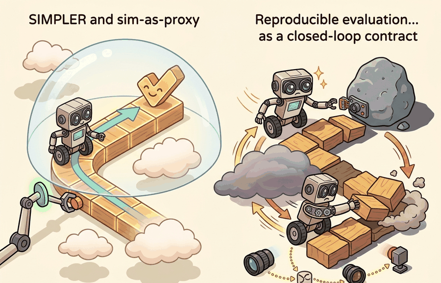

For Reproducible evaluation: SIMPLER and sim-as-proxy, a benchmark conclusion survives reruns only when the panel, seed policy, exclusion rules, and raw episode artifacts are inspectable.
An Evaluation Methodologist
A robotics team runs ten thousand simulated grasps overnight, ships the top-ranked policy, and watches it fail in the warehouse because the simulator never captured table-surface friction correctly. The ranking looked solid; the proxy was broken. As embodied AI scales to real deployments, the cost of a corrupted benchmark is not a bad paper score but a grounded fleet. SIMPLER and the sim-as-proxy discipline give you a concrete protocol: build a matched real panel, measure rank correlation and failure-mode overlap, and draw a clear line between what the simulator can decide and what only physical evidence can settle.

This section assumes familiarity with the sim-to-real gap concepts introduced in section 20.3, particularly how domain randomization and dynamics mismatch affect policy transfer. The fidelity-gap metric and proxy-validity table developed here feed directly into section 52.6 on benchmark hygiene, where the same matched-panel discipline is applied to real-robot leaderboard design. Readers working on fleet-scale deployment will find these ideas revisited in Part XII alongside runtime monitoring and anomaly detection.
Why This Matters
Reproducible evaluation: SIMPLER and sim-as-proxy matters because evaluation choices rewrite the scientific claim. If the metric drops time, energy, or safety terms that the deployment team cares about, the benchmark no longer matches the real decision.
Let $S$ be the simulator score and $R$ the real-world score over matched tasks. A practical proxy check is the fidelity gap $$\Delta = \left|\mathbb{E}[S] - \mathbb{E}[R]\right|$$ plus a rank correlation between methods over the same task panel. A low average gap without rank preservation is still a weak proxy.
The fidelity gap matters in embodied AI because physical consequences scale with systematic bias: a simulator that consistently inflates grasp success by 15 percentage points will cause teams to ship policies that fail on real hardware, and those failures carry costs ranging from dropped objects to joint torque faults that require manual reset. A small $\Delta$ does not mean the proxy is safe; it means the absolute scores are close, which is a different and weaker claim than the ranking being trustworthy.
Mechanically, $\Delta$ is estimated by running the same set of evaluation episodes in both domains. The expectation $\mathbb{E}[S]$ is the mean success rate across episodes and, typically, multiple seeds in the simulator; $\mathbb{E}[R]$ is the mean over a matched real panel using the same task definitions, object instances, and success criteria. Matched means the episode start states, object poses, and scoring thresholds are aligned so that any remaining difference is attributable to the simulator, not to protocol drift.
A simulator is not validated by looking plausible. It is validated when the same ranking, failure modes, or sensitivity trends survive on the matched real panel often enough to support the intended decision.
- Define which decision the simulator proxy is supposed to support, such as model ranking, hyperparameter filtering, or failure-mode search.
- Construct a matched sim and real panel with aligned task definitions and artifact schema.
- Compute mean gaps, ranking stability, and overlap in failure taxonomy.
- Document where the simulator is trustworthy and where it is only exploratory.
- Re-check the proxy whenever the robot hardware, perception stack, or environment distribution changes materially.
Worked Example
A simulator may preserve policy ranking on tabletop grasping but fail to preserve contact-rich insertion errors because friction and compliance are mis-modeled. That makes it a good filter for broad candidate screening but a weak final judge for insertion policies.
sim_scores = {"A": 0.84, "B": 0.76, "C": 0.72}
real_scores = {"A": 0.68, "B": 0.70, "C": 0.61}
ranking_sim = sorted(sim_scores, key=sim_scores.get, reverse=True)
ranking_real = sorted(real_scores, key=real_scores.get, reverse=True)
mean_gap = round(sum(abs(sim_scores[k] - real_scores[k]) for k in sim_scores) / len(sim_scores), 3)
print({"ranking_sim": ranking_sim, "ranking_real": ranking_real, "mean_gap": mean_gap}){'ranking_sim': ['A', 'B', 'C'], 'ranking_real': ['B', 'A', 'C'], 'mean_gap': 0.11}Expected output: The proxy loses trust here because the best simulator method is not the best real-world method. The mean gap alone would miss that decision-level failure.
Use scipy.stats.spearmanr rather than Pearson correlation when auditing proxy validity: Spearman measures rank agreement, which is what matters for method selection decisions, and it is insensitive to the systematic score inflation that simulators almost always introduce. A Spearman rho below 0.7 on your matched panel is a clear signal to restrict the simulator to candidate screening only, not final ranking. Compute the p-value too; with fewer than ten methods in the panel, a rho of 0.8 can still be statistically insignificant and should be reported as such.
SIMPLER-style infrastructure, benchmark manifests, and replay artifacts help because they enforce matched schemas across simulation and real execution. The library advantage is standardization, not automatic transfer.
SIMPLER-style sim-as-proxy evaluation needs a correlation audit, not just a simulator score. Pandas aligns simulated and real episodes, SciPy estimates rank agreement and uncertainty, DVC pins both panels, and MLflow or Weights and Biases links each simulated run to the physical policy it claims to predict.
Consider a specific case: the SIMPLER benchmark (Li et al., 2024) evaluates manipulation policies inside a MuJoCo-based tabletop environment that mirrors the Google Robot and Bridge v2 real-robot setups used in the RT-2 and Octo evaluations. On pick-and-place tasks with static objects, SIMPLER achieved Spearman rank correlations above 0.9 with physical robot scores across five candidate policies. On tasks requiring fine contact alignment (e.g., peg insertion), the same simulator dropped to correlations near 0.5, making it useful for initial screening but unreliable for final selection. That explicit per-task-family validity table is what distinguishes a credible sim-as-proxy claim from an unchecked one.
The strongest simulator proxy claims are narrow and explicit. A simulator might be trusted for policy ranking within one morphology and camera setup, but not for fleet-wide energy forecasting or human-interaction safety.
The practical deliverable is a proxy-validity table that names the task family, robot configuration, simulator settings, real-world panel, correlation window, and known mismatch. Without that table, a simulator result is evidence for simulation only.
A common failure mode is to treat a proxy as universally valid after one early correlation result. Proxy validity is local to task family, hardware configuration, and decision type.
Sim-as-proxy is appropriate when: the task is geometrically well-defined (pick, place, navigate a known map), the simulator has been correlation-checked on that specific task family, and the decision is about ranking or filtering rather than absolute safety certification. It is not appropriate when: the task outcome depends on real sensor noise distributions (e.g., LiDAR in rain), rare human behaviors, or physical compliance properties (soft-body deformation, wet surfaces) that the simulator does not model. A simulator's visual fidelity is not sufficient evidence; the correlation audit on the matched real panel is.
Cross-References
This section connects backward to Chapter 20 on sim-to-real transfer and forward to Section 52.6 on benchmark hygiene.
Take three candidate policies, evaluate them in simulation and on a small real panel, and compute both mean score gap and ranking agreement. Then write one paragraph naming which decision the simulator can support reliably.
Think of a restaurant critic who rates three dishes and finds the kitchen's own tasting scores are always about 10 points higher than the diners' scores, but in the same order. That consistent offset is harmless: you still know which dish to order. Now imagine the kitchen rates Dish A highest but diners consistently prefer Dish B, even though the average score gap is still only 10 points. The offset did not hurt you; the flipped ranking did. A low fidelity gap tells you the kitchen and the dining room agree on magnitude; rank correlation tells you whether they agree on which dish wins.
Students often assume that a small mean score gap between simulator and real-world results is sufficient proof that the simulator is a valid proxy. In embodied AI, this is wrong: a low $\Delta$ only means absolute scores are numerically close, not that the simulator preserves the ranking of competing methods. As the worked example above shows, a mean gap of 0.11 can coexist with a ranking inversion that causes the wrong policy to be selected for deployment. The correct mental model is that proxy validity is a claim about rank preservation and failure-mode overlap for a specific task family, not a claim about average score closeness, and it must be verified with a Spearman correlation audit on a matched real panel.
Do not use simulator-only confidence intervals to justify real-world deployment approval. Proxy evidence can prioritize tests, but it cannot replace the tests whose outcome it is only trying to predict.
For autonomous driving, CARLA may be strong for regression testing and scenario replay but incomplete for real sensor contamination or rare human behavior. For manipulation, MuJoCo or Isaac may screen policies well while missing subtle compliance errors.
Current sim-as-proxy research targets two bottlenecks. First, contact-rich task families: MuJoCo's rigid-body contact model consistently loses rank agreement below Spearman rho 0.6 on peg-in-hole and cable-routing tasks where soft-body deformation and stick-slip friction dominate; Isaac Lab's GPU-parallel solver closes part of that gap but introduces its own bias on gripper-surface adhesion. Second, sensor-noise fidelity: depth cameras on Franka Panda and UR5 arms produce structured noise patterns (edge bleeding, specular dropout) that neither MuJoCo nor Isaac reproduces by default, causing policies optimized in simulation to mis-estimate object pose by 3 to 8 mm at contact, a margin that collapses grasp success on sub-centimeter pegs. The active direction is adaptive domain randomization guided by real-hardware residuals: measure the sim-to-real residual on a held-out probe task, feed it back as a randomization budget, and re-check the proxy correlation before promoting any policy to physical trials.
Can you state one decision for which your simulator is trustworthy and one for which it is not? If not, the proxy contract is still too vague.
Sim-as-proxy is a scientific claim about decision support. It earns trust through matched panels, explicit fidelity gaps, and repeated checks against real evidence.
Choose one simulator you use. Define the decision it is meant to support, the matched real panel needed to test that claim, and the failure signal that would invalidate the proxy.
Calling a simulator a "proxy" without checking whether it preserves rankings is like calling a map "accurate" because it is printed in color. The validation happens on the road, not on the page.
Section References
Official SIMPLER and related benchmark resources.
Use the project artifacts to see how matched simulator and real evaluation can share manifests and replay structure.
Todorov, E., Erez, T., and Tassa, Y. "MuJoCo: A physics engine for model-based control." (2012). https://mujoco.org/
A central simulator lineage for embodied control research.
Section 52.6 closes the chapter by moving from metric design to benchmark governance, protocol control, and real-world evaluation hygiene.